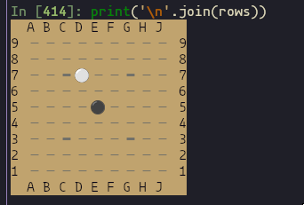

A few months ago I started playing Go and became a fast fan of the game. I and a few friends I have roped into learning with me have been playing on online-go.com (OGS), both via their website and a third party Android app called Sente. As with every new website I find remotely useful, I had to check if they have an API.
Spoiler: they do.

My goal is to make a program that, given the link to or ID of a game on OGS, will produce an animated gif of the game. Comfortable in my knowledge that OGS has an API and charmbracelet/vhs exists, I chose to start with the game engine. This could be later categorized as a mistake.
Game Engine
As I intend to use charmbracelet/vhs to generate the gif, my first concern was whether I can represent a Go board in a nice way in the terminal. The game pieces in Go are black and white stones and I already know I want to use emoji (⚫⚪) to represent them. There are plenty of Unicode characters for drawing boxes and grids, but the trouble is that emoji are roughly two characters wide in monospace fonts. With this limitation, a grid of intersecting lines was impossible, but I eventually came up with the following ASCII board:
A B C D E F G H J K L M N O P Q R S T
19 ╶╴╶╴╶╴╶╴╶╴╶╴╶╴╶╴╶╴╶╴╶╴╶╴╶╴╶╴╶╴╶╴╶╴╶╴╶╴ 19
18 ╶╴╶╴╶╴╶╴╶╴╶╴╶╴╶╴╶╴╶╴╶╴╶╴╶╴╶╴╶╴╶╴╶╴╶╴╶╴ 18
17 ╶╴╶╴╶╴╶╴╶╴╶╴╶╴╶╴╶╴╶╴╶╴╶╴╶╴╶╴╶╴╶╴╶╴╶╴╶╴ 17
16 ╶╴╶╴╶╴╺╸╶╴╶╴╶╴╶╴╶╴╺╸╶╴╶╴╶╴╶╴╶╴╺╸╶╴╶╴╶╴ 16
15 ╶╴╶╴╶╴╶╴╶╴╶╴╶╴╶╴╶╴╶╴╶╴╶╴╶╴╶╴╶╴╶╴╶╴╶╴╶╴ 15
14 ╶╴╶╴╶╴╶╴╶╴╶╴╶╴╶╴╶╴╶╴╶╴╶╴╶╴╶╴╶╴╶╴╶╴╶╴╶╴ 14
13 ╶╴╶╴╶╴╶╴╶╴╶╴╶╴╶╴╶╴╶╴╶╴╶╴╶╴╶╴╶╴╶╴╶╴╶╴╶╴ 13
12 ╶╴╶╴╶╴╶╴╶╴╶╴╶╴╶╴╶╴╶╴╶╴╶╴╶╴╶╴╶╴╶╴╶╴╶╴╶╴ 12
11 ╶╴╶╴╶╴╶╴╶╴╶╴╶╴╶╴╶╴╶╴╶╴╶╴╶╴╶╴╶╴╶╴╶╴╶╴╶╴ 11
10 ╶╴╶╴╶╴╺╸╶╴╶╴╶╴╶╴╶╴╺╸╶╴╶╴╶╴╶╴╶╴╺╸╶╴╶╴╶╴ 10
9 ╶╴╶╴╶╴╶╴╶╴╶╴╶╴╶╴╶╴╶╴╶╴╶╴╶╴╶╴╶╴╶╴╶╴╶╴╶╴ 9
8 ╶╴╶╴╶╴╶╴╶╴╶╴╶╴╶╴╶╴╶╴╶╴╶╴╶╴╶╴╶╴╶╴╶╴╶╴╶╴ 8
7 ╶╴╶╴╶╴╶╴╶╴╶╴╶╴╶╴╶╴╶╴╶╴╶╴╶╴╶╴╶╴╶╴╶╴╶╴╶╴ 7
6 ╶╴╶╴╶╴╶╴╶╴╶╴╶╴╶╴╶╴╶╴╶╴╶╴╶╴╶╴╶╴╶╴╶╴╶╴╶╴ 6
5 ╶╴╶╴╶╴╶╴╶╴╶╴╶╴╶╴╶╴╶╴╶╴╶╴╶╴╶╴╶╴╶╴╶╴╶╴╶╴ 5
4 ╶╴╶╴╶╴╺╸╶╴╶╴╶╴╶╴╶╴╺╸╶╴╶╴╶╴╶╴╶╴╺╸╶╴╶╴╶╴ 4
3 ╶╴╶╴╶╴╶╴╶╴╶╴╶╴╶╴╶╴╶╴╶╴╶╴╶╴╶╴╶╴╶╴╶╴╶╴╶╴ 3
2 ╶╴╶╴╶╴╶╴╶╴╶╴╶╴╶╴╶╴╶╴╶╴╶╴╶╴╶╴╶╴╶╴╶╴╶╴╶╴ 2
1 ╶╴╶╴╶╴╶╴╶╴╶╴╶╴╶╴╶╴╶╴╶╴╶╴╶╴╶╴╶╴╶╴╶╴╶╴╶╴ 1
A B C D E F G H J K L M N O P Q R S TNote: This board mimics the default board display on OGS, which omits the letter I from the legend.
Representing the Board
Considering that the board is simply a 2d array, numpy is the perfect choice for representing the game’s state. Zeros are empty spaces, ones will be black stones, and twos will be white stones. Let’s start with some constants and a board.
import numpy as np
# let's start with a 9x9 board for the sake of brevity
size = 9
state = np.zeros((size,size), dtype=int)
state[4, 4] = 1
state[2, 3] = 2
print(state)array([[0, 0, 0, 0, 0, 0, 0, 0, 0],
[0, 0, 0, 0, 0, 0, 0, 0, 0],
[0, 0, 0, 2, 0, 0, 0, 0, 0],
[0, 0, 0, 0, 0, 0, 0, 0, 0],
[0, 0, 0, 0, 1, 0, 0, 0, 0],
[0, 0, 0, 0, 0, 0, 0, 0, 0],
[0, 0, 0, 0, 0, 0, 0, 0, 0],
[0, 0, 0, 0, 0, 0, 0, 0, 0],
[0, 0, 0, 0, 0, 0, 0, 0, 0]])Game Pieces & Intersections
Now we can loop over the game state to make a friendlier render of the game. Default monospace fonts in browsers are often a bit tall and narrow - if this looks a little awkward, there are screenshots coming up.
B = "⚫"
W = "⚪"
PT = "╶╴"
for row in state:
print(''.join([(PT,B,W)[i] for i in row]))╶╴╶╴╶╴╶╴╶╴╶╴╶╴╶╴╶╴
╶╴╶╴╶╴╶╴╶╴╶╴╶╴╶╴╶╴
╶╴╶╴╶╴⚪╶╴╶╴╶╴╶╴╶╴
╶╴╶╴╶╴╶╴╶╴╶╴╶╴╶╴╶╴
╶╴╶╴╶╴╶╴⚫╶╴╶╴╶╴╶╴
╶╴╶╴╶╴╶╴╶╴╶╴╶╴╶╴╶╴
╶╴╶╴╶╴╶╴╶╴╶╴╶╴╶╴╶╴
╶╴╶╴╶╴╶╴╶╴╶╴╶╴╶╴╶╴
╶╴╶╴╶╴╶╴╶╴╶╴╶╴╶╴╶╴Adding Star Points to the Board
Star points have no value or significance in Go, they are simply there to orient ourselves on the board. It just doesn’t look quite right without them though.
I wrote this in a fever dream. Through liberal use of the walrus operator, we set the location of each star point to a -1. By creating an array the same size as our game board, we’ll be able to combine them.
To be more specific, corners calculates the spacing between star points based on the size of the board (13 and 19 size boards have the same spacing), then we use product() to give us every combination of appropriate points on the board, adding in the middle point manually.
from itertools import product
star_points = np.zeros((size,size), dtype=int)
corners = [j for i in range(3) if (j:=((s:=2+(size>9))+(2*s*i))) < size]
pts = [(f:=size//2, f)] + list(product(corners, repeat=2))
star_points[*zip(*pts)] = -1
print(star_points)Why -1? The way things are written so far, a 3 would also work. I wanted the ability to get all stones on the board by filtering the state for any positions that are greater than zero, however I inadvertently skirted this problem by only applying the star points to the board directly before printing and the -1 stuck around.
array([[ 0, 0, 0, 0, 0, 0, 0, 0, 0],
[ 0, 0, 0, 0, 0, 0, 0, 0, 0],
[ 0, 0, -1, 0, 0, 0, -1, 0, 0],
[ 0, 0, 0, 0, 0, 0, 0, 0, 0],
[ 0, 0, 0, 0, -1, 0, 0, 0, 0],
[ 0, 0, 0, 0, 0, 0, 0, 0, 0],
[ 0, 0, -1, 0, 0, 0, -1, 0, 0],
[ 0, 0, 0, 0, 0, 0, 0, 0, 0],
[ 0, 0, 0, 0, 0, 0, 0, 0, 0]])“Masking” is a useful technique where we create an array of boolean values of the same shape as an array of data. The array of booleans, or ‘mask’, can then be applied to the array of data by indexing: data[mask]. This allows us to return or affect only the values that align with True values in the mask.
By masking out the game pieces that have already been played (any points that are not 0), we can assign the star points to the game board only if a piece hasn’t already been played in that position.
SP = "╺╸"
# make a copy before applying the star points; we don't want our game state to
# contain anything other than zeros, ones, and twos
board = state.copy()
mask = ~state.astype(bool)
board[mask] = star_points[mask]
for row in board:
print(''.join([(PT,B,W,SP)[i] for i in row]))╶╴╶╴╶╴╶╴╶╴╶╴╶╴╶╴╶╴
╶╴╶╴╶╴╶╴╶╴╶╴╶╴╶╴╶╴
╶╴╶╴╺╸⚪╶╴╶╴╺╸╶╴╶╴
╶╴╶╴╶╴╶╴╶╴╶╴╶╴╶╴╶╴
╶╴╶╴╶╴╶╴⚫╶╴╶╴╶╴╶╴
╶╴╶╴╶╴╶╴╶╴╶╴╶╴╶╴╶╴
╶╴╶╴╺╸╶╴╶╴╶╴╺╸╶╴╶╴
╶╴╶╴╶╴╶╴╶╴╶╴╶╴╶╴╶╴
╶╴╶╴╶╴╶╴╶╴╶╴╶╴╶╴╶╴Labelling the Rows & Columns
Next up are row and column labels. As mentioned above, OGS skips the letter I, so I am doing the same.
ALPHA = 'abcdefghijklmnopqrstuvwxyz'
joined = ' '.join(list(ALPHA.replace('i', '')[:size])).upper()
rows = [col_label:=f"{(d:=' ' * s)}{joined} {d}"]
for r, input_row in enumerate(board, 1):
row = ''.join([(PT,B,W,SP)[i] for i in input_row])
num = str(size - r + 1)
lnum = num.rjust(int(len(str(size))))
rnum = num.ljust(int(len(str(size))))
rows.append(f'{lnum} {row} {rnum}')
rows.append(col_label)
print('\n'.join(rows))--A B C D E F G H J --
9 ╶╴╶╴╶╴╶╴╶╴╶╴╶╴╶╴╶╴ 9
8 ╶╴╶╴╶╴╶╴╶╴╶╴╶╴╶╴╶╴ 8
7 ╶╴╶╴╺╸⚪╶╴╶╴╺╸╶╴╶╴ 7
6 ╶╴╶╴╶╴╶╴╶╴╶╴╶╴╶╴╶╴ 6
5 ╶╴╶╴╶╴╶╴⚫╶╴╶╴╶╴╶╴ 5
4 ╶╴╶╴╶╴╶╴╶╴╶╴╶╴╶╴╶╴ 4
3 ╶╴╶╴╺╸╶╴╶╴╶╴╺╸╶╴╶╴ 3
2 ╶╴╶╴╶╴╶╴╶╴╶╴╶╴╶╴╶╴ 2
1 ╶╴╶╴╶╴╶╴╶╴╶╴╶╴╶╴╶╴ 1
--A B C D E F G H J --A Coat of Paint
Let’s add some ANSI color escape codes to the mix to give our board that realistic wooden effect.
BLACK = '\033[30m'
GRAY = '\033[90m'
YELLOW = '\033[33m'
BG_YELLOW = '\033[43m'
RESET = '\033[0m'
joined = ' '.join(list(ALPHA.replace('i', '')[:size])).upper()
rows = [col_label:=f"{YELLOW}{(d:=' ' * s)}{BLACK}{joined} {YELLOW}{d}"]
for r, input_row in enumerate(board, 1):
row = ''.join([(PT,B,W,SP)[i] for i in input_row])
num = str(size - r + 1)
lnum = num.rjust(int(len(str(size))))
rnum = num.ljust(int(len(str(size))))
rows.append(f'{BLACK}{lnum} {GRAY}{row} {BLACK}{rnum}')
rows.append(col_label)
rows = [f'{BG_YELLOW}{row}{RESET}' for row in rows]
print('\n'.join(rows))Markdown doesn’t render color escape codes, so here’s a screenshot!

Wrap It Up
Now let’s package that all together in a class to make it easier to play a stone.
ALPHA = 'abcdefghijklmnopqrstuvwxyz'
B = "⚫"
W = "⚪"
PT = "╶╴"
SP = "╺╸"
BLACK = '\033[30m'
GRAY = '\033[90m'
YELLOW = '\033[33m'
BG_YELLOW = '\033[43m'
RESET = '\033[0m'
class Board:
def __init__(self, size: int = 19):
self.size = size
self.state = np.zeros((size,size), dtype=int)
def play(self, player: int, x: int, y: int) -> None:
self.state[y][x] = player
def __str__(self) -> str:
# generate star points
star_points = np.zeros((self.size,self.size), dtype=int)
corners = [j for i in range(3) if (j:=((s:=2+(self.size>9))+(2*s*i))) < self.size]
pts = [(f:=self.size//2, f)] + list(product(corners, repeat=2))
star_points[*zip(*pts)] = -1
# add star points to board
board = self.state.copy()
mask = ~self.state.astype(bool)
board[mask] = star_points[mask]
# generate plaintext board
joined = ' '.join(list(ALPHA.replace('i', '')[:size])).upper()
rows = [col_label:=f"{YELLOW}{(d:=' ' * s)}{BLACK}{joined} {YELLOW}{d}"]
for r, input_row in enumerate(board, 1):
row = ''.join([(PT,B,W,SP)[i] for i in input_row])
num = str(size - r + 1)
lnum = num.rjust(int(len(str(size))))
rnum = num.ljust(int(len(str(size))))
rows.append(f'{BLACK}{lnum} {GRAY}{row} {BLACK}{rnum}')
rows.append(col_label)
rows = [f'{BG_YELLOW}{row}{RESET}' for row in rows]
return '\n'.join(rows)The .__str__() method
Python class method surrounded in double underscores are called “magic methods” or “dunder methods”. .__init__() is also an example. Read more about them.
tl;dr, the __str__() method determines what gets sent to the console when an instance of the class is given as an argument to print(), allowing us to simply print a board like so:
b = Board(9)
print(b)The .play() method
We’ve swapped x and y in the input arguments to be more intuitive. All we have to do is add a player number (1 for black, 2 for white) to the game’s state and the appropriate pieces will be rendered on print.
...
def play(self, player: int, x: int, y: int) -> None:
self.state[y, x] = player
...Quick Test Drive
Testing the play method on a board of each size:
for size in [9, 13, 19]:
b = Board(size)
b.play(1, 4, 4)
b.play(2, 3, 2)
print(b)
Nice.
Next Time: API Headaches
While there is more to do with regard to the game engine, it would be great to have a list of plays to loop over with our new Board class, and that’s exactly what the OGS API returns. Next up, we’ll talk about the first time I almost gave up on this project, and also a lot of documentation.
Until then!
This page lovingly generated by Quarto ❤️